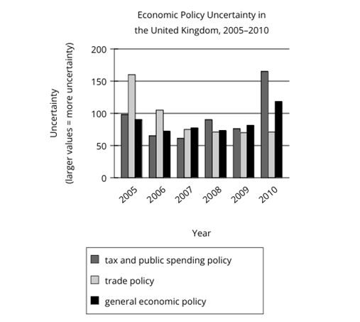
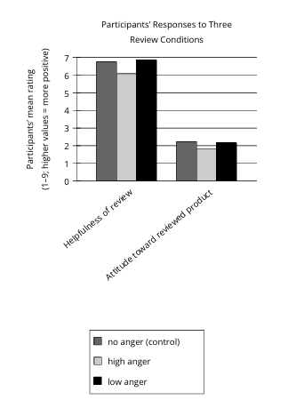

|
|
|
|
Module 1
Question 1.
Artist Marilyn Dingle’s intricate, coiled baskets are ______ sweetgrass and palmetto palm. Following a Gullah technique that originated in West Africa, Dingle skillfully winds a thin palm frond around a bunch of sweetgrass with the help of a “sewing bone” to create the basket’s signature look that no factory can reproduce.
Which choice completes the text with the most logical and precise word or phrase?
A. indicated by
B. handmade from
C. represented by
D. collected with
Question 2.
The following text is adapted from Nathaniel Hawthorne’s 1837 story “Dr. Heidegger’s Experiment.” The main character, a physician, is experimenting with rehydrating a dried flower.
At first [the rose] lay lightly on the surface of the fluid, appearing to imbibe none of its moisture. Soon, however, a singular change began to be visible. The crushed and dried petals stirred and assumed a deepening tinge of crimson, as if the flower were reviving from a deathlike slumber.
As used in the text, what does the phrase “a singular” most nearly mean?
A. A lonely
B. A disagreeable
C. An acceptable
D. An extraordinary
Question 3.
Drivers who strongly believe that the toll they must pay to use the Lewis and Clark Bridge, which spans the Ohio River to connect Indiana and Kentucky, is currently too high are unlikely to be ______ a proposal to increase the toll. Advocates for a higher toll are likely to have more success if they instead direct their arguments toward a more persuadable segment of the population.
Which choice completes the text with the most logical and precise word or phrase?
A. receptive to
B. apprised of
C. incensed by
D. cited in
Question 4.
According to a team of neuroeconomists from the University of Zurich, ease of decision making may be linked to communication between two brain regions, the prefrontal cortex and the parietal cortex. Individuals tend to be more decisive if the information flow between the regions is intensified, whereas they make choices more slowly when information flow is ______.
Which choice completes the text with the most logical and precise word or phrase?
A. reduced
B. evaluated
C. determined
D. acquired
Question 5.
The following text is from Srimati Svarna Kumari Devi’s 1894 novel The Fatal Garland (translated by A. Christina Albers in 1910). Shakti is walking near a riverbank that she visited frequently during her childhood.
She crossed the woods she knew so well. The trees seemed to extend their branches like welcoming arms. They greeted her as an old friend. Soon she reached the river-side.
Which choice best describes the function of the underlined portion in the text as a whole?
A. It suggests that Shakti feels uncomfortable near the river.
B. It indicates that Shakti has lost her sense of direction in the woods.
C. It emphasizes Shakti’s sense of belonging in the landscape.
D. It conveys Shakti’s appreciation for her long-term friendships.
Question 6.
In 1154, Muhammad al-Idrisi completed a collection of maps of the lands known to medieval Arabic and European scholars. This collection was titled Al-Kitāb al-Rujārī (The Book of Roger), after the Norman king Roger II who hired him to create it. To create the collection, al-Idrisi consulted Arabic and Greek maps and interviewed travelers about the lands they visited. He included these travelers’ stories alongside the map illustrations.
Which choice best states the main purpose of the text?
A. To discuss the benefits of studying mapmaking
B. To explain how travelers created maps
C. To describe a collection of medieval maps and how it was created
D. To compare medieval Arabic and Greek mapmaking techniques
Question 7.
Text 1
Imagine you and your friend are trying to decide where to eat lunch. When people try to make joint decisions like this, they often don’t reveal their true preferences. Instead, they say they would be happy with all options because they think this response will help them appear more easygoing and likable to the other person.
Text 2
Research shows that people who don’t state their preferences when making a decision with others aren’t more likable in the eyes of others. In fact, stating that you have no preference actually makes the decision more difficult for other people. It can also cause them to feel less happy with their ultimate decision and with you.
Based on the texts, what response would the author of Text 2 most likely suggest for someone in the situation described in the underlined sentence in Text 1?
A. Cancel the plan to have lunch together.
B. Ask where the friend typically likes to eat.
C. State a preference about where to eat.
D. Change the subject to talk about something else.
Question 8.
A study by Dr. Paul Hanel and colleagues concluded that people are more likely to behave politely when listening to ideas they disagree with if they think about values before they engage in a discussion. Study participants were assigned to one of two groups. The experimental group spent a few minutes writing about one of their personal values before they had a group discussion on a controversial topic. And the control group spent a few minutes writing about a drink (tea, milk, etc.) before their group discussion on that topic. Hanel and colleagues found that the experimental group’s discussion was more civil than the control group’s discussion was.
Which choice best describes the main purpose of the text?
A. To describe a widely held belief and how a study’s results support that belief
B. To argue that researchers were surprised by the results of a certain study
C. To suggest ways to improve a certain study’s experimental design
D. To explain a study’s conclusion and how a research team arrived at that conclusion
Question 9.
Astronomers are confident that the star Betelgeuse will eventually consume all the helium in its core and explode in a supernova. They are much less confident, however, about when this will happen, since that depends on internal characteristics of Betelgeuse that are largely unknown. Astrophysicist Sarafina El-Badry Nance and colleagues recently investigated whether acoustic waves in the star could be used to determine internal stellar states but concluded that this method could not sufficiently reveal Betelgeuse’s internal characteristics to allow its evolutionary state to be firmly fixed.
Which choice best describes the function of the second sentence in the overall structure of the text?
A. It describes a serious limitation of the method used by Nance and colleagues.
B. It presents the central finding reported by Nance and colleagues.
C. It identifies the problem that Nance and colleagues attempted to solve but did not.
D. It explains how the work of Nance and colleagues was received by others in the field.
Question 10.
Using NASA’s powerful James Webb Space Telescope (JWST), Mercedes López-Morales and colleagues measured the wavelengths of light traveling through the atmosphere of WASP-39b, an exoplanet, or planet outside our solar system. Different molecules absorb different wavelengths of light, and the wavelength measurements showed the presence of carbon dioxide (CO₂) in WASP-39b’s atmosphere. This finding not only offers the first decisive evidence of CO₂ in the atmosphere of an exoplanet but also illustrates the potential for future scientific breakthroughs held by the JWST.
Which choice best describes the overall structure of the text?
A. It discusses a method used by some researchers, then states why an alternative method is superior to it.
B. It describes how researchers made a scientific discovery, then explains the importance of that discovery.
C. It outlines the steps taken in a scientific study, then presents a hypothesis based on that study.
D. It examines how a group of scientists reached a conclusion, then shows how other scientists have challenged that conclusion.
Question 11.
A common assumption among art historians is that the invention of photography in the mid-nineteenth century displaced the painted portrait in the public consciousness. The diminishing popularity of the portrait miniature, which coincided with the rise of photography, seems to support this claim. However, photography’s impact on the portrait miniature may be overstated. Although records from art exhibitions in the Netherlands from 1820 to 1892 show a decrease in the number of both full-sized and miniature portraits submitted, this trend was established before the invention of photography.
Based on the text, what can be concluded about the diminishing popularity of the portrait miniature in the nineteenth century?
A. Factors other than the rise of photography may be more directly responsible for the portrait miniature’s decline.
B. Although portrait miniatures became less common than photographs, they were widely regarded as having more artistic merit.
C. The popularity of the portrait miniature likely persisted for longer than art historians have assumed.
D. As demand for portrait miniatures decreased, portrait artists likely shifted their creative focus to photography.
Question 12.
Believing that living in an impractical space can heighten awareness and even improve health, conceptual artists Madeline Gins and Shusaku Arakawa designed an apartment building in Japan to be more fanciful than functional. A kitchen counter is chest-high on one side and knee-high on the other; a ceiling has a door to nowhere. The effect is disorienting but invigorating: after four years there, filmmaker Nobu Yamaoka reported significant health benefits.
Which choice best states the main idea of the text?
A. Although inhabiting a home surrounded by fanciful features such as those designed by Gins and Arakawa can be rejuvenating, it is unsustainable.
B. Designing disorienting spaces like those in the Gins and Arakawa building is the most effective way to create a physically stimulating environment.
C. As a filmmaker, Yamaoka has long supported the designs of conceptual artists such as Gins and Arakawa.
D. Although impractical, the design of the apartment building by Gins and Arakawa may improve the well-being of the building’s residents.
Question 13.
In her 2021 article “Throwaway History: Towards a Historiography of Ephemera,” scholar Anne Garner discusses John Johnson (1882–1956), a devoted collector of items intended to be discarded, including bus tickets and campaign pamphlets. Johnson recognized that scholarly institutions considered his expansive collection of ephemera to be worthless—indeed, it wasn’t until 1968, after Johnson’s death, that Oxford University’s Bodleian Library acquired the collection, having grasped the items’ potential value to historians and other researchers. Hence, the example of Johnson serves to ______
Which choice most logically completes the text?
A. demonstrate the difficulties faced by contemporary historians in conducting research at the Bodleian Library without access to ephemera.
B. represent the challenge of incorporating examples of ephemera into the collections of libraries and other scholarly institutions.
C. lend support to arguments by historians and other researchers who continue to assert that ephemera holds no value for scholars.
D. illustrate both the relatively low scholarly regard in which ephemera was once held and the later recognition of ephemera’s possible utility.
Question 14.
Utah is home to Pando, a colony of about 47,000 quaking aspen trees that all share a single root system. Pando is one of the largest single organisms by mass on Earth, but ecologists are worried that its growth is declining in part because of grazing by animals. The ecologists say that strong fences could prevent deer from eating young trees and help Pando start thriving again.
According to the text, why are ecologists worried about Pando?
A. It isn’t growing at the same rate it used to.
B. It isn’t producing young trees anymore.
C. It can’t grow into new areas because it is blocked by fences.
D. Its root system can’t support many more new trees.
Question 15.
The practice of logging (cutting down trees for commercial and other uses) is often thought to be at odds with forest conservation (the work of preserving forests). However, a massive study in forest management and preservation spanning 700,000 hectares in Oregon’s Malheur National Forest calls that view into question. So far, results of the study suggest that forest plots that have undergone limited logging (the careful removal of a controlled number of trees) may be more robust than plots that haven’t been logged at all. These results, in turn, suggest that ______
Which choice most logically completes the text?
A. logging may be useful for maintaining healthy forests, provided it is limited.
B. other forest management strategies are more effective than limited logging.
C. as time passes, it will be difficult to know whether limited logging has any benefits.
D. the best way to support forest health may be to leave large forests entirely untouched.
Question 16.

High levels of public uncertainty about which economic policies a country will adopt can make planning difficult for businesses, but measures of such uncertainty have not tended to be very detailed. Recently, however, economist Sandile Hlatshwayo analyzed trends in news reports to derive measures not only for general economic policy uncertainty but also for uncertainty related to specific areas of economic policy, like tax or trade policy. One revelation of her work is that a general measure may not fully reflect uncertainty about specific areas of policy, as in the case of the United Kingdom, where general economic policy uncertainty ______
Which choice most effectively uses data from the graph to illustrate the claim?
A. aligned closely with uncertainty about tax and public spending policy in 2005 but differed from uncertainty about tax and public spending policy by a large amount in 2009.
B. was substantially lower than uncertainty about tax and public spending policy each year from 2005 to 2010.
C. reached its highest level between 2005 and 2010 in the same year that uncertainty about trade policy and tax and public spending policy reached their lowest levels.
D. was substantially lower than uncertainty about trade policy in 2005 and substantially higher than uncertainty about trade policy in 2010.
Question 17.
When fashion designer Lloyd Henri Kiva New opened his store in Scottsdale, Arizona, in 1945, he quickly became known for creating delicately crafted leather goods, like belts and hats. He was perhaps most renowned for his colorful handbags, which he made by hand using a long and painstaking process. As he gained more customers, New began using sewing machines and other tools to help him produce bags more efficiently, though he continued to handcraft the crucial details that made each bag unique.
Based on the text, what would have been the most likely consequence if New had not begun using sewing machines?
A. He would have been unable to ensure that each bag included unique, handcrafted details.
B. He would have struggled to meet the increasing demand for his bags.
C. He would have had to individually design each bag he produced.
D. He would not have been able to generate as much interest in his bags.
Question 18.
Biologists have predicted that birds’ feather structures vary with habitat temperature, but this hadn’t been tested in mountain environments. Ornithologist Sahas Barve studied feathers from 249 songbird species inhabiting different elevations—and thus experiencing different temperatures—in the Himalaya Mountains. He found that feathers of high-elevation species not only have a greater proportion of warming downy sections to flat and smooth sections than do feathers of low-elevation species, but high-elevation species’ feathers also tend to be longer, providing a thicker layer of insulation.
Which choice best states the main idea of the text?
A. Barve’s investigation shows that some species of Himalayan songbirds have evolved feathers that better regulate body temperature than do the feathers of other species, contradicting previous predictions.
B. Barve found an association between habitat temperature and feather structure among Himalayan songbirds, lending new support to a general prediction.
C. Barve discovered that songbirds have adapted to their environment by growing feathers without flat and smooth sections, complicating an earlier hypothesis.
D. The results of Barve’s study suggest that the ability of birds to withstand cold temperatures is determined more strongly by feather length than feather structure, challenging an established belief.
Question 19.
Nigerian American artist Toyin Ojih Odutola uses black-ink pens to create highly detailed drawings of human figures. Her portrait of novelist Zadie ______ is displayed in the National Portrait Gallery in London.
Which choice completes the text so that it conforms to the conventions of Standard English?
A.
Smith:
B. Smith—
C. Smith
D. Smith,
Question 20.
The city of Pompeii, which was buried in ash following the eruption of Mount Vesuvius in 79 CE, continues to be studied by archaeologists. Unfortunately, as ______ attest, archaeological excavations have disrupted ash deposits at the site, causing valuable information about the eruption to be lost.
Which choice completes the text so that it conforms to the conventions of Standard English?
A. researchers, Roberto Scandone and Christopher Kilburn,
B. researchers, Roberto Scandone and Christopher Kilburn
C. researchers Roberto Scandone and Christopher Kilburn
D. researchers Roberto Scandone, and Christopher Kilburn
Question 21.
Eli Eisenberg, a genetics expert at Tel Aviv University in Israel, recently discovered that ______ have a special genetic ability called RNA editing that confers evolutionary advantages.
Which choice completes the text so that it conforms to the conventions of Standard English?
A. cephalopods, ocean dwellers that include the squid, the octopus, and the cuttlefish
B. cephalopods—ocean dwellers—that include the squid, the octopus, and the cuttlefish,
C. cephalopods, ocean dwellers that include: the squid, the octopus, and the cuttlefish,
D. cephalopods—ocean dwellers that include the squid, the octopus, and the cuttlefish—
Question 22.
By the time Hawaiian king Kamehameha III ______ the throne, the number of longhorn cattle, first introduced to the islands in 1793, had drastically increased, and so too had the need for paniolo (Hawaiian cowboys) to manage the wild herds that then roamed throughout the volcanic terrain.
Which choice completes the text so that it conforms to the conventions of Standard English?
A. ascended
B. will ascend
C. ascends
D. is ascending
Question 23.
In the late 1960s, inspired in part by the sight of laundry hanging on a clothesline, African American abstract painter Sam Gilliam began to create his iconic “Drape” paintings. He applied bold, saturated hues to large canvases and ______ them from ceilings or walls, causing the drooping fabric to cascade in dramatic loops and curves.
Which choice completes the text so that it conforms to the conventions of Standard English?
A. had suspended
B. suspending
C. to suspend
D. suspended
Question 24.
In 1942, the 1,500-mile Alaska Highway was constructed in under nine months, largely due to the skilled work of nearly 4,000 African American soldiers from US Army engineering regiments. The soldiers’ contribution was overlooked for decades. ______ in 2017, lawmakers declared October 25 a day of recognition—“Alaska Highway Day”—for the troops who helped build this critical roadway.
Which choice completes the text with the most logical transition?
A. Lastly,
B. Then,
C. Similarly,
D. For example,
Question 25.
Scientists were able to isolate a relatively pure sample of selenium in 1817, the same year they first discovered the element’s existence. ______ the isolation process took longer for molybdenum, which was isolated in its pure form three years after scientists first discovered it.
Which choice completes the text with the most logical transition?
A. By contrast,
B. Thus,
C. Similarly,
D. For instance,
Question 26.
While researching a topic, a student has taken the following notes:
The student wants to present the primary aim of the research study. Which choice most effectively uses relevant information from the notes to accomplish this goal?
A. Bhosale’s team wanted to better understand the mechanics behind bird nests’ uniquely flexible yet cohesive structural properties.
B. The researchers used laboratory models that simulated the arrangement of flexible sticks and analyzed the points where sticks touched one another.
C. After analyzing the points where sticks touched, the researchers found that the structures became stiffer when pressure was applied.
D. As analyzed by Bhosale’s team, bird nests are uniquely flexible yet cohesive engineered structures.
Question 27.
While researching a topic, a student has taken the following notes:
The student wants to explain an advantage of the new platinum catalyst developed by Jianbo Tang and his colleagues. Which choice most effectively uses relevant information from the notes to accomplish this goal?
A. Researcher Jianbo Tang and his colleagues created a platinum catalyst that combines platinum, a rare and expensive metal, with liquid gallium.
B. Like other platinum catalysts, the new platinum catalyst requires a particular amount of the metal to be effective.
C. Platinum is a rare and expensive metal that is used as a catalyst for chemical reactions; however, platinum catalysts typically require a large amount of platinum to be effective.
D. While still highly effective, the new platinum catalyst requires far less of the rare and expensive metal than do other platinum catalysts.
Module 2
Question 1.
The following text is adapted from George Eliot’s 1871–72 novel Middlemarch.
[Mr. Brooke] had travelled in his younger years, and was held in this part of the country to have contracted a too rambling habit of mind. Mr. Brooke’s conclusions were as difficult to predict as the weather.
As used in the text, what does the word “contracted” most nearly mean?
A. Restricted
B. Described
C. Developed
D. Settled
Question 2.
The following text is from F. Scott Fitzgerald’s 1925 novel The Great Gatsby.
[Jay Gatsby] was balancing himself on the dashboard of his car with that resourcefulness of movement that is so peculiarly American—that comes, I suppose, with the absence of lifting work in youth and, even more, with the formless grace of our nervous, sporadic games. This quality was continually breaking through his punctilious manner in the shape of restlessness.
As used in the text, what does the word “quality” most nearly mean?
A. Standard
B. Prestige
C. Characteristic
D. Accomplishment
Question 3.
The following text is adapted from Upton Sinclair’s 1906 novel The Jungle. Marija is helping to manage her sister’s wedding.
It was [Marija’s] task to see that all things went in due form, and after the best home traditions; and, flying wildly hither and thither, bowling every one out of the way, and scolding and exhorting all day with her tremendous voice, Marija was too eager to see that others conformed to the proprieties to consider them herself.
As used in the text, what does the word “consider” most nearly mean?
A. Take into account and follow
B. Admire steadily and praise
C. Come to a decision about
D. Have an opinion on
Question 4.
To develop a method for measuring snow depth with laser beams, NASA physicist Yongxiang Hu relied on ______ ; identifying broad similarities between two seemingly different phenomena, Hu used information about how ants move inside colonies to calculate how the particles of light that make up laser beams travel through snow.
Which choice completes the text with the most logical and precise word or phrase?
A. a collaboration
B. an accessory
C. a contradiction
D. an analogy
Question 5.
A journalist and well-respected art critic of nineteenth-century Britain, Lady Elizabeth Rigby Eastlake did not hesitate to publish reviews that went against popular opinion. One of her most divisive works was an essay questioning the idea of photography as an emerging medium for fine art: in the essay, Eastlake ______ that the value of photographs was informational rather than creative.
Which choice completes the text with the most logical and precise word or phrase?
A. exposed
B. asserted
C. discovered
D. doubted
Question 6.
The following text is from Joseph Conrad’s 1907 novel The Secret Agent: A Simple Tale. Mr. Verloc is navigating the London streets on his way to a meeting.
Before reaching Knightsbridge, Mr. Verloc took a turn to the left out of the busy main thoroughfare, uproarious with the traffic of swaying omnibuses and trotting vans, in the almost silent, swift flow of hansoms [horse-drawn carriages]. Under his hat, worn with a slight backward tilt, his hair had been carefully brushed into respectful sleekness; for his business was with an Embassy. And Mr. Verloc, steady like a rock—a soft kind of rock—marched now along a street which could with every propriety be described as private.
Which choice best describes the function of the underlined phrase in the text as a whole?
A. It qualifies an earlier description of Mr. Verloc.
B. It emphasizes an internal struggle Mr. Verloc experiences.
C. It contrasts Mr. Verloc with his surroundings.
D. It reveals a private opinion Mr. Verloc holds.
Question 7.
Why do sand cats purr but lions roar? Researchers hypothesize that this difference between the two feline species may be partly due to a U-shaped bone in their throats called the hyoid. Sand cats, which are much smaller than lions, have a rigid hyoid that rumbles when the cat’s larynx vibrates, resulting in a purr. By contrast, lions have a somewhat flexible hyoid, and the bone is attached to the skull with a stretchy ligament that sand cats lack. These traits allow lions and most other species of big cats to produce powerful roars. The same traits may also prevent most big cats from purring.
Which choice best describes the overall structure of the text?
A. The text presents a theory about two species, then discusses facts that weaken it.
B. The text compares the habitats of two species, then explains how those habitats are changing.
C. The text describes a behavior shared by two species, then discusses other behaviors shared by them.
D. The text poses a question about two species, then presents a possible answer.
Question 8.
Text 1
Microbes are tiny organisms in the soil, water, and air all around us. They thrive even in very harsh conditions. That’s why Noah Fierer and colleagues were surprised when soil samples they collected from an extremely cold, dry area in Antarctica didn’t seem to contain any life. The finding doesn’t prove that there are no microbes in that area, but the team says it does suggest that the environment severely restricts microbes’ survival.
Text 2
Microbes are found in virtually every environment on Earth. So it’s unlikely they would be completely absent from Fierer’s team’s study site, no matter how extreme the environment is. There were probably so few organisms in the samples that current technology couldn’t detect them. But since a spoonful of typical soil elsewhere might contain billions of microbes, the presence of so few in the Antarctic soil samples would show how challenging the conditions are.
Based on the texts, Fierer’s team and the author of Text 2 would most likely agree with which statement about microbes?
A. Most microbes are better able to survive in environments with extremely dry conditions than in environments with harsh temperatures.
B. A much higher number of microbes would probably be found if another sample of soil were taken from the Antarctic study site.
C. Microbes are likely difficult to detect in the soil at the Antarctic study site because they tend to be smaller than microbes found in typical soil elsewhere.
D. Most microbes are probably unable to withstand the soil conditions at the Antarctic study site.
Question 9.
Companies are providing consumers with more opportunities to purchase customized products than ever before. Whether buying customized sneakers, jewelry, or clothing, consumers can participate in the design of products to meet their specific needs and tastes. In turn, companies profit too: studies have shown that consumers are willing to pay more and wait longer for a customized product. Still, it can be difficult for companies to offer customization while keeping costs low, as the standard methods of mass production may not be able to accommodate making a unique product each time.
Which choice best describes the overall structure of the text?
A. It discusses several recent innovations in product manufacturing and then suggests some potential applications of those innovations.
B. It describes a company’s recent success with new products and then explains multiple factors that may have contributed to that success.
C. It introduces a trend in consumer products and then explains how the trend both benefits and poses a challenge to companies.
D. It presents two contrasting product-marketing techniques and then provides examples of one of those techniques.
Question 10.
Very little is known about the role nocturnal insects, such as moths, play in flower pollination because it is difficult to monitor insects at night. To address this problem, a team of scientists used time-lapse cameras to record pollinator visits to red clover all day and night. The recordings showed that while most pollinator visits were by bumblebees, one-third of visits were by moths. Additionally, flowers that were visited by both moths and bees produced more seeds than flowers that were only visited by bees.
Which choice best states the function of the underlined sentence?
A. To describe an approach a team of scientists used to study pollinators
B. To question a claim scientists make about pollinators
C. To explain why moths prefer red clover to other flowers
D. To announce an unexpected research finding about red clover
Question 11.
In 1973, poet Miguel Algarín started inviting other writers who, like him, were Nuyorican—a term for New Yorkers of Puerto Rican heritage—to gather in his apartment to present their work. The gatherings were so well attended that Algarín soon had to rent space in a cafe to accommodate them. Thus, the Nuyorican Poets Cafe was born. Moving to a permanent location in 1981, the Nuyorican Poets Cafe expanded its original scope beyond the written word, hosting art exhibitions and musical performances as well. Half a century since its inception, it continues to foster emerging Nuyorican talent.
Which choice best describes the overall purpose of the text?
A. To explain what motivated Algarín to found the Nuyorican Poets Cafe
B. To situate the Nuyorican Poets Cafe within the cultural life of New York as a whole
C. To discuss why the Nuyorican Poets Cafe expanded its scope to include art and music
D. To provide an overview of the founding and mission of the Nuyorican Poets Café
Question 12.
In 2007, computer scientist Luis von Ahn was working on converting printed books into a digital format. He found that some words were distorted enough that digital scanners couldn’t recognize them, but most humans could easily read them. Based on that finding, von Ahn invented a simple security test to keep automated “bots” out of websites. The first version of the reCAPTCHA test asked users to type one known word and one of the many words scanners couldn’t recognize. Correct answers proved the users were humans and added data to the book-digitizing project.
Which choice best states the main purpose of the text?
A. To discuss von Ahn’s invention of reCAPTCHA
B. To explain how digital scanners work
C. To call attention to von Ahn’s book-digitizing project
D. To indicate how popular reCAPTCHA is
Question 13.
Researchers recently found that disruptions to an enjoyable experience, like a short series of advertisements during a television show, often increase viewers’ reported enjoyment. Suspecting that disruptions to an unpleasant experience would have the opposite effect, the researchers had participants listen to construction noise for 30 minutes and anticipated that those whose listening experience was frequently interrupted with short breaks of silence would thus ______
Which choice most logically completes the text?
A. find the disruptions more irritating as time went on.
B. rate the listening experience as more negative than those whose listening experience was uninterrupted.
C. rate the experience of listening to construction noise as lasting for less time than it actually lasted.
D. perceive the volume of the construction noise as growing softer over time.
Question 14.
The following text is adapted from Edgar Allan Poe’s 1849 story “Landor’s Cottage.”
During a pedestrian trip last summer, through one or two of the river counties of New York, I found myself, as the day declined, somewhat embarrassed about the road I was pursuing. The land undulated very remarkably; and my path, for the last hour, had wound about and about so confusedly, in its effort to keep in the valleys, that I no longer knew in what direction lay the sweet village of B——, where I had determined to stop for the night.
Which choice best states the main idea of the text?
A. The narrator remembers a trip he took and admits to getting lost.
B. The narrator recalls fond memories of a journey that he took through some beautiful river counties.
C. The narrator describes what he saw during a long trip through a frequently visited location.
D. The narrator explains the difficulties he encountered on a trip and how he overcame them.
Question 15.
“We Are Marching” is a 1921 poem by Carrie Law Morgan Figgs. In the poem, the speaker predicts future success: ______
Which quotation from “We Are Marching” most effectively illustrates the claim?
A. “Can’t you hear the sound of feet?”
B. “You who are out just get in line.”
C. “We have answered duty’s call.”
D. “We shall never know defeat.”
Question 16.

To understand how expressions of anger in reviews of products affect readers of those reviews, business scholar Dezhi Yin and colleagues measured study participants’ responses to three versions of the same negative review—a control review expressing no anger, a review expressing a high degree of anger, and a review expressing a low degree of anger. Reviewing the data, a student concludes that the mere presence of anger in a review may not negatively affect readers’ perceptions of the review, but a high degree of anger in a review does worsen readers’ perceptions of the review.
Which choice best describes data from the graph that support the students’ conclusion?
A. On average, participants’ ratings of the helpfulness of the review were substantially higher than were participants’ ratings of the reviewed product regardless of which type of review participants had seen.
B. Compared with participants who saw the control review, participants who saw the low-anger review rated the review as slightly more helpful, whereas participants who saw the high-anger review rated the review as less helpful.
C. Participants who saw the low-anger review rated the review as slightly more helpful than participants who saw the control review did, but participants’ attitude toward the reviewed product was slightly worse when participants saw the low-anger review than when they saw the no-anger review.
D. Compared with participants who saw the low-anger review, participants who saw the high-anger review rated the review as less helpful and had a less positive attitude toward the reviewed product.
Question 17.
Arthur Conan Doyle’s stories about detective Sherlock Holmes were published between 1887 and 1927. They have inspired countless successful adaptations, including comic strips, movies, and a television series Sherlock Hound, directed by Hayao Miyazaki, who is celebrated for his animated movies. Until 2014, these stories were copyrighted. The right to adapt was only available to those who could afford the copyright fee and gain approval from the strict copyright holders of Doyle’s estate. Some journalists predict that the number of Sherlock Holmes adaptations is likely to increase since the end of copyright means that ______
Which choice most logically completes the text?
A. Doyle’s original stories will become hard to find.
B. people will become more interested in detective stories than they were in the 1800s.
C. producing adaptations will become easier and less expensive.
D. the former copyright holders of Doyle’s estate will return fees they collected.
Question 18.
In recent years, economists around the world have created new tools that quantify the overall well-being of a country’s citizens. Economists in India, for example, use an Ease of Living Index. This tool ______ economic potential, sustainability, and citizens’ quality of life.
Which choice completes the text so that it conforms to the conventions of Standard English?
A. measures
B. had measured
C. would have measured
D. will have been measuring
Question 19.
If an animal can recognize itself in a reflective surface (“the mirror test”), it is considered to have self-awareness. In a recent study, scientists ______ for evidence of self-awareness in snakes, species that rely primarily on olfactory rather than visual processing, adapted the test to foreground smell, modifying the scent trails of North American eastern garter snakes and African ball pythons.
Which choice completes the text so that it conforms to the conventions of Standard English?
A. searched
B. searching
C. were searching
D. have searched
Question 20.
The algaita is a double reed wind instrument from West Africa. The reed of a wind instrument is the mouthpiece ______ A double reed contains two pieces of cane that vibrate and produce sound as air passes between them.
Which choice completes the text so that it conforms to the conventions of Standard English?
A. where sound is made?
B. where is sound made.
C. where sound is made.
D. where is sound made?
Question 21.
Despite being cheap, versatile, and easy to produce, ______ they are made from nonrenewable petroleum, and most do not biodegrade in landfills.
Which choice completes the text so that it conforms to the conventions of Standard English?
A. there are two problems associated with commercial plastics:
B. two problems are associated with commercial plastics:
C. commercial plastics’ two associated problems are that
D. commercial plastics have two associated problems:
Question 22.
A recent study tracked the number of bee species present in twenty-seven New York apple orchards over a ten-year period. ______ found that when wild growth near an orchard was cleared, the number of different bee species visiting the orchard decreased.
Which choice completes the text so that it conforms to the conventions of Standard English?
A. Entomologist Heather Grab:
B. Entomologist, Heather Grab,
C. Entomologist Heather Grab
D. Entomologist Heather Grab,
Question 23.
Alexander Lawrence Posey (1873–1908) varied his focus and tone depending on the genre in which he was writing. In his poetry, he used heartfelt language to evoke the beauty and peacefulness of his natural surroundings; in his journalism, ______ he employed humor and satire to comment on political issues affecting his Muskogee Creek community.
Which choice completes the text with the most logical transition?
A. that is,
B. granted,
C. similarly,
D. by contrast,
Question 24.
In her poetry collection Thomas and Beulah, Rita Dove interweaves the titular characters’ personal stories with broader historical narratives. She places Thomas’s journey from the American South to the Midwest in the early 1900s within the larger context of the Great Migration. _____ Dove sets events from Beulah’s personal life against the backdrop of the US Civil Rights Movement.
Which choice completes the text with the most logical transition?
A. Specifically,
B. Thus,
C. Regardless,
D. Similarly,
Question 25.
For years, biologists have experimented with using grime-eating bacteria rather than harsh chemicals to clean artworks, and results have been impressive overall. ______ these bacterial strains—which can metabolize centuries’ worth of oil, glue, dirt, and other surface impurities without creating harmful byproducts—have proven more effective than traditional chemical cleaning methods.
Which choice completes the text with the most logical transition?
A. However,
B. In many cases,
C. As a result,
D. Additionally,
Question 26.
While researching a topic, a student has taken the following notes:
The student wants to compare the two women’s contributions to the March on Washington. Which choice most effectively uses relevant information from the notes to accomplish this goal?
A. Hedgeman and Bates contributed to the march in different ways; Bates, for example, delivered a brief but memorable address.
B. Hedgeman worked in politics and helped organize the march, while Bates was a journalist and school desegregation advocate.
C. Although Hedgeman worked behind the scenes to make sure a woman speaker was included, Bates was the sole woman to speak at the march.
D. Many African American women, including Bates and Hedgeman, fought for civil rights, but only one spoke at the march.
Question 27.
While researching a topic, a student has taken the following notes:
The student wants to describe how the bicycles in Double Phantom/EntroP.R. are fused together. Which choice most effectively uses relevant information from the notes to accomplish this goal?
A. To create the sculpture Double Phantom/EntroP.R., Miguel Luciano fused together two Schwinn Phantom bicycles.
B. There are two red Schwinn Phantom bicycles in the sculpture Double Phantom/EntroP.R.
C. The two red bicycles in Double Phantom/EntroP.R. are fused together so that they share the same rear wheel while facing opposite directions.
D. Double Phantom/EntroP.R. is a sculpture created by multimedia visual artist Miguel Luciano.